공조냉동기계산업기사 (2018-03-04 기출문제)
1과목: 공기조화
1. 덕트 내 공기가 흐를 때 정압과 동압에 관한 설명으로 틀린 것은?
- 정압은 항상 대기압 이상의 압력으로 된다.
- 정압은 공기가 정지상태일지라도 존재한다.
- 동압은 공기가 움직이고 있을 때만 생기는 속도 압이다.
- 덕트 내에서 공기가 흐를 때 그 동압을 측정하면 속도를 구할 수 있다.
(정답률: 75%)

2. 공기조화 방식의 특징 중 전공기식의 특징에 관한 설명으로 옳은 것은?
- 송풍 동력이 펌프 동력에 비해 크다.
- 외기냉방을 할 수 없다.
- 겨울철에 가습하기가 어렵다.
- 실내에 누수의 우려가 있다.
(정답률: 72%)
3. 증기난방 방식의 종류에 따른 분류 기준으로 가장 거리가 먼 것은?
- 사용 증기압력
- 증기 배관방식
- 증기 공급방향
- 사용 열매종류
(정답률: 83%)
4. 공조용 저속덕트를 등마찰법으로 설계할 때 사용하는 단위 마찰저항으로 가장 적당한 것은?
- 0.007~0.015Pa/m
- 0.7~1.5Pa/m
- 7~15Pa/m
- 70~150Pa/m
(정답률: 76%)
5. 다음 중 저속덕트와 고속덕트를 구분하는 주덕트 내의 풍속으로 적당한 것은?
- 8m/s
- 15m/s
- 25m/s
- 45m/s
(정답률: 88%)
6. 다음 냉방부하 종류 중 현열부하만 이용하여 계산하는 것은?
- 극간풍에 의한 열량
- 인체의 발생열량
- 기구의 발생열량
- 송풍기에 의한 취득열량
(정답률: 63%)
7. 고온수 난방 배관에 관한 설명으로 옳은 것은?
- 장치의 열용량이 작아 예열시간이 짧다.
- 대량의 열량공급은 용이하지만 배관의 지름은 저온수 난방보다 크게 된다.
- 관내 압력이 높기 때문에 관내면의 부식문제가 증기난방에 비해 심하다.
- 공급과 환수의 온도차를 크게 할 수 있으므로 열수송량이 크다.
(정답률: 63%)
8. 공기조화방식의 열매체에 의한 분류 중 냉매방식의 특징에 대한 설명으로 틀린 것은?
- 유닛에 냉동기를 내장하므로 국소적인 운전이 자유롭게 된다.
- 온도조절기를 내장하고 있어 개별제어가 가능하다.
- 대형의 공조실을 필요로 한다.
- 취급이 간단하고 대형의 것도 쉽게 운전할 수 있다.
(정답률: 71%)
9. 일반적인 덕트설비를 설계할 때 덕트 설계순서로 옳은 것은?
- 덕트 계획→덕트치수 및 저항 산출→흡입·취출구 위치결정→송풍량 산출→덕트 경로결정→송풍기 선정
- 덕트 계획→덕트 경로설정→덕트치수 및 저항 산출→송풍량 산출→흡입·취출구 위치결정→송풍기 선정
- 덕트 계획→송풍량 산출→흡입·취출구 위치결정→덕트 경로설정→덕트치수 및 저항 산출→송풍기 선정
- 덕트 계획→흡입·취출구 위치결정→덕트치수 및 저항 산출→덕트 경로설정→송풍량 산출→송풍기 선정
(정답률: 65%)
10. 건구온도 10℃, 상대습도 60％인 습공기를 30℃로 가열하였다. 이때의 습공기 상대습도는? (단, 10℃의 포화수증기압은 9.2mmHg이고, 30℃의 포화수증기압은 23.75mmHg이다.)
- 17％
- 20％
- 23％
- 27％
(정답률: 57%)
11. 온도가 20℃, 절대압력이 1MPa인 공기의 밀도(kg/m3)는?(단, 공기는 이상기체이며, 기체상수(R)는 0.287kJ/kgㆍK이다.)
- 9.55
- 11.89
- 13.78
- 15.89
(정답률: 53%)
12. 겨울철에 난방을 하는 건물의 배기열을 효과적으로 회수하는 방법이 아닌 것은?
- 전열교환기 방법
- 현열교환기 방법
- 열펌프 방법
- 축열조 방법
(정답률: 72%)
13. 보일러에서 물이 끓어 증발할 때 보일러수가 물방울 또는 거품으로 되어 증기에 섞여 보일러 밖으로 분출되어 나오는 장해의 종류는?
- 스케일 장해
- 부식 장해
- 캐리오버 장해
- 슬러지 장해
(정답률: 85%)
14. 송풍 공기량을 Q[m3/s], 외기 및 실내온도를 각각 to, tr[℃]이라 할 때 침입외기에 의한 손실 열량 중 현열부하(kcal/h)를 구하는 공식은?(단, 공기의 정압비열은 1.0kcal/kg·℃, 밀도는 1.2kg/m3이다.)(문제 복원 오류로 문제 내용이 정확하지 않을수 있습니다. 정확한 문제 내용을 아시는분께서는 오류신고를 통하여 내용 작성 부탁 드립니다.)
- 1.0×Q×(to - tr)
- 1.2×Q×(to - tr)
- 597.5×Q×(to - tr)
- 717×Q×(to - tr)
(정답률: 62%)
15. 증기난방의 장점이 아닌 것은?
- 방열기가 소형이 되므로 비용이 적게 든다.
- 열의 운반능력이 크다.
- 예열시간이 온수난방에 비해 짧고 증기 순환이 빠르다.
- 소음(steam hammering)을 일으키지 않는다.
(정답률: 77%)
16. 전열교환기에 대한 설명으로 틀린 것은?
- 회전식과 고정식 등이 있다.
- 현열과 잠열을 동시에 교환한다.
- 전열교환기는 공기 대 공기 열교환기라고도 한다.
- 동계에 실내로부터 배기되는 고온·다습공기와 한냉·건조한 외기와의 열교환을 통해 엔탈피 감소효과를 가져온다.
(정답률: 68%)
17. 가변 풍량 방식에 대한 설명으로 옳은 것은?
- 실내온도제어는 부하변동에 따른 송풍온도를 변화시켜 제어한다.
- 부분부하시 송풍기 제어에 의하여 송풍기 동력을 절감할 수 있다.
- 동시 사용률을 적용할 수 없으므로 설비용량을 줄일 수 없다.
- 시운전시 취출구의 풍량조절이 복잡하다.
(정답률: 58%)
18. 증기트랩(Steam trap)에 대한 설명으로 옳은 것은?
- 고압의 증기를 만들기 위해 가열하는 장치
- 증기가 환수관으로 유입되는 것을 방지하기 위해 설치한 밸브
- 증기가 역류하는 것을 방지하기 위해 만든 자동밸브
- 간헐운전을 하기 위해 고압의 증기를 만다는 자동밸브
(정답률: 77%)
19. 에어 핸들링 유닛(Air Handling Unit)의 구성요소가 아닌 것은?
- 공기 여과기
- 송풍기
- 공기 냉각기
- 압축기
(정답률: 81%)
20. 공기조화기(AHU)의 냉·온수 코일 선정에 대한 설명으로 틀린 것은?
- 코일의 통과풍속은 약 2.5m/s를 기준으로 한다.
- 코일 내 유속은 1.0m/s전후로 하는 것이 적당하다.
- 공기의 흐름방향과 냉온수의 흐름방향은 평행류보다 대향류로 하는 것이 전열효과가 크다.
- 코일의 통풍저항을 크게 할수록 좋다.
(정답률: 75%)
2과목: 냉동공학
21. 증기분사식 냉동장치에서 사용되는 냉매는?
- 프레온
- 물
- 암모니아
- 염화칼슘
(정답률: 82%)
22. 핫가스(hot gas) 제상을 하는 소형 냉동장치에서 핫가스의 흐름을 제어하는 것은?
- 캐필러리튜브(모세관)
- 자동팽창밸브(AEV)
- 솔레노이드밸브(전자밸브)
- 증발압력조정밸브
(정답률: 77%)
23. 냉동장치의 액관 중 발생하는 플래시 가스의 발생 원인으로 가장 거리가 먼 것은?
- 액관의 입상높이가 매우 작을 때
- 냉매 순환량에 비하여 액관의 관경이 너무 작을 때
- 배관에 설치된 스트레이너, 필터 등이 막혀 있을 때
- 액관이 직사광선에 노출될 때
(정답률: 75%)
24. 다음 상태변화에 대한 설명으로 옳은 것은?
- 단열변화에서 엔트로피는 증가한다.
- 등적변화에서 가해진 열량은 엔탈피 증가에 사용된다.
- 등압변화에서 가해진 열량은 엔탈피 증가에 사용된다.
- 등온변화에서 절대일은 0 이다.
(정답률: 63%)
25. 압축기의 체적효율에 대한 설명으로 틀린 것은?
- 압축기의 압축비가 클수록 커진다.
- 틈새가 작을수록 커진다.
- 실제로 압축기에 흡입되는 냉매증기의 체적과 피스톤이 배출한 체적과의 비를 나타낸다.
- 비열비 값이 적을수록 적게 된다.
(정답률: 65%)
26. 10kg의 산소가 체적5 로부터 11m3로 변화하였다. 이 변화가 일정 압력 하에 이루어졌다면 엔트로피의 변화(kcal/kgㆍK)는?(단, 산소는 완전가스로 보고, 정압비열은 0.221kcal/kgㆍK로 한다.)
- 1.55
- 1.74
- 1.95
- 2.⑤
(정답률: 58%)
27. 냉동사이클에서 응축온도를 일정하게 하고 압축기 흡입가스의 상태를 건포화 증기로 할때 증발 온도를 상승시키면 어떤 결과가 나타나는가?
- 압축비 증가
- 성적계수 감소
- 냉동효과 증가
- 압축일량 증가
(정답률: 66%)
28. 냉동효과에 관한 설명으로 옳은 것은?
- 냉동효과란 응축기에서 방출하는 열량을 의미한다.
- 냉동효과는 압축기의 출구 엔탈피와 증발기의 입구 엔탈피 차를 이용하여 구할 수 있다.
- 냉동효과는 팽창밸브 직전의 냉매 액온도가 높을수록 크며, 또 증발기에서 나오는 냉매증기의 온도가 낮을수록 크다.
- 냉동효과를 크게 하려면 냉매의 과냉각도를 증가시키는 방법을 취하면 된다.
(정답률: 62%)
29. 조건을 참고하여 산출한 이론 냉동사이클의 성적계수는?
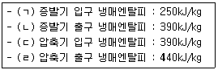
- 2.5
- 2.8
- 3.2
- 3.8
(정답률: 69%)
30. 다음 중 몰리엘(P-h) 선도에 나타나 있지 않은 것은?
- 엔트로피
- 온도
- 비체적
- 비열
(정답률: 77%)
31. 다음과 같은 냉동기의 냉동능력(RT)은?(단, 응축기 냉각수 입구온도 18℃, 응축기 냉각수 출구온도 23℃, 응축기 냉각수수량 1500L/min, 압축기 주전동기 축마력은 80PS, 1RT는3320 kcal/h이다.)
- 135
- 120
- 150
- 125
(정답률: 44%)
32. 다음 그림은 어떤 사이클인가?(단, P=압력, h=엔탈피, T=온도, S=엔트로피이다.)
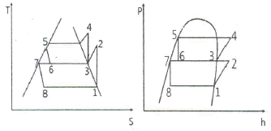
- 2단압축 1단팽창 사이클
- 2단압축 2단팽창 사이클
- 1단압축 1단팽창 사이클
- 1단압축 2단팽창 사이클
(정답률: 86%)
33. 냉동장치 내 불응축가스가 존재하고 있는 것이 판단되었다. 그 혼입의 원인으로 가장 거리가 먼 것은?
- 냉매충전 전에 장치 내를 진공건조시키기 위하여 상온에서 진공 750mmHg까지 몇 시간 동안 진공 펌프를 운전하였기 때문인다.
- 냉매와 윤활유의 충전작업이 불량했기 때문이다.
- 냉매와 윤활유가 분해하기 때문이다.
- 팽창밸브에서 수분이 동결하고 흡입가스 압력이 대기압 이하가 되기 때문이다.
(정답률: 71%)
34. 냉매의 구비조건으로 틀린 것은?
- 임계온도는 높고, 응고점은 낮아야 한다.
- 증발 잠열과 기체의 비열은 작아야 한다.
- 장치를 침식하지 않으며 절연 내력이 커야한다.
- 점도와 표면장력은 작아야 한다.
(정답률: 65%)
35. 조건을 참고하여 산출한 흡수식냉동기의 성적계수는?
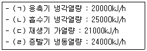
- 0.88
- 1.14
- 1.34
- 1.52
(정답률: 64%)
36. 중간냉각기에 대한 설명으로 틀린 것은?
- 다단압축냉동장치에서 저단측 압축기 압축압력(중간압력)의 포화온도까지 냉각하기 위하여 사용한다.
- 고단측 압축기로 유입되는 냉매증기의 온도를 낮추는 역할도 한다.
- 중간냉각기의 종류에는 플래시형, 액냉각형, 직접팽창형이 있다.
- 2단압축 1단팽창 냉동장치에는 플래시형 중간냉각방식이 이용되고 있다.
(정답률: 58%)
37. 수냉식 냉동장치에서 단수되거나 순환수량이 적어질 떄 경고 장치보호를 위해 작동하는 스위치는?
- 고압 스위치
- 저압 스위치
- 유압 스위치
- 플로우(flow) 스위치
(정답률: 78%)
38. 어떤 냉매의 액이 30℃의 포화온도에서 팽창밸브로 공급되어 증발기로부터 5℃의 포화증기가 되어 나올 때 1냉동톤당 냉매의 양(kg/h)은?(단, 5℃의 엔탈피는 140.83kcal/kg, 30℃의 엔탈피는 107.65kcal/kg이다.)
- 100.1
- 50.6
- 10.8
- 5.3
(정답률: 49%)
39. 냉동장치의 안전장치 중 압축기로의 흡입압력이 소정의 압력 이상이 되었을 경우 과부하에 의한 압축기용 전동기의 위험을 방지하기 위하여 설치되는 기기는?
- 증발압력 조정밸브(EPR)
- 흡입압력 조정밸브(SPR)
- 고압 스위치
- 저압 스위치
(정답률: 84%)
40. 공기냉동기의 온도가 압축기 입구에서 -10℃, 압축기 출구에서 110℃, 팽창밸브 입구에서 10℃, 팽창밸브 출구에서 -60℃일 때, 압축기의 소요일량(kcal/kg)은?(단, 공기비열은 0.24kcal/kgㆍ℃)
- 12
- 14
- 16
- 18
(정답률: 31%)
3과목: 배관일반
41. 가스배관에서 가스공급을 중단시키지 않고 분해·점검할 수 있는 것은?
- 바이패스관
- 가스미터
- 부스터
- 수취기
(정답률: 77%)
42. 급탕설비에 사용되는 저탕조에서 필요한 부속품으로 가장 거리가 먼 것은?
- 안전밸브
- 수위계
- 압력계
- 온도계
(정답률: 53%)
43. 열전도도가 비교적 크고, 내식성과 굴곡성이 풍부한 장점이 있어 열교환기용 관으로 널리 사용되는 관은?
- 강관
- 플라스틱관
- 주철관
- 동관
(정답률: 75%)
44. 급탕배관 계통에서 배관 중 총 손실열량이 15000kcal/h이고, 급탕온도가 70℃, 환수온도가 60℃일 때, 순환수량(kg/min)은?
- 1500
- 100
- 25
- 5
(정답률: 59%)
45. 다음 중 옥내 노출배관 보온재 외피 시공 시 미관과 내구성을 고려하였을 때 적합한 재료는?
- 면포
- 아연도금강판
- 비닐 테이프
- 방수 마포
(정답률: 75%)
46. 다음 중 유기질 보온재의 종류가 아닌 것은?
- 석면
- 펠트
- 코르크
- 기포성 수지
(정답률: 65%)
47. 배관설계 시 유의사항으로 틀린 것은?
- 가능한 동일 직경의 배관은 짧고, 곧게 배관한다.
- 관로의 색깔로 유체의 종류를 나타낸다.
- 관로가 너무 길어서 압력손실이 생기지 않도록 한다.
- 곡관을 사용할 때는 관 굽힘 곡률 반경을 작게 한다.
(정답률: 81%)
48. 다음 중 이온화에 의한 금속부식에서 이온화 경향이 가장 작은 금속은?
- Mg
- Sn
- Pb
- Al
(정답률: 65%)
49. 도시가스배관을 지하에 매설하는 중앙 이상인 배관(a)과 지상에 설치하는 배관(b)의 표면 색상으로 옳은 것은?
- (a)적색 (b)회색
- (a)백색 (b)적색
- (a)적색 (b)황색
- (a)백색 (b)황색
(정답률: 78%)
50. 냉매배관 시공 시 주의사항으로 틀린 것은?
- 배관재료는 각각의 용도, 냉매종류, 온도를 고려하여 선택한다.
- 배관 곡관부의 곡률 반지름은 가능한 한 크게 한다.
- 배관이 고온의 장소를 통과할 때는 단열조치 한다.
- 기기 상호 간 배관길이는 되도록 길게 하고 관경은 크게 한다.
(정답률: 79%)
51. 온수난방 배관 시공 시 배관의 구배에 관한 설명으로 틀린 것은?
- 배관의 구배는 1/250 이상으로 한다.
- 단관 중력 환수식의 온수 주관은 하향구배를 준다.
- 상향 복관 환수식에서는 온수 공급관, 복귀관 모두 하향 구배를 준다.
- 강제 순환식은 배관의 구배를 자유롭게 한다.
(정답률: 65%)
52. 다음 냉동기호가 의미하는 밸브는 무엇인가?
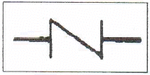
- 체크 밸브
- 글로브 밸브
- 슬루스 밸브
- 앵글 밸브
(정답률: 84%)
53. 다음 중 기밀성, 수밀성이 뛰어나고 견고한 배관 접속 방법은?
- 플랜지 접합
- 나사접합
- 소켓접합
- 용접접합
(정답률: 80%)
54. 송풍기의 토출측과 흡입측에 설치하여 송풍기의 진동이 덕트나 장치에 전달되는 것을 방지하기 위한 접속법은?
- 크로스 커넥션(cross connection)
- 캔버스 커넥션(canvas connection)
- 서브 스테이션(sub station)
- 하트포드(hartford) 접속법
(정답률: 78%)
55. 관의 끝을 나팔모양으로 넓혀 이음쇠의 테이퍼면에 밀착시키고 너트로 체결하는 이음으로, 배관의 분해·결합이 필요한 경우에 이용하는 이음방법은?
- 빅토릭 이음(victoric joint)
- 그립식 이음(grip type joint)
- 플레어 이음(flare joint)
- 랩 조인트(lap joint)
(정답률: 74%)
56. 냉동장치에서 증발기가 응축기보다 아래에 있을 때 압축기 정지 시 증발기로의 냉매 흐름방지를 위해 설치하는 것은?
- 역구배 루프배관
- 트런처
- 균압배관
- 안전밸브
(정답률: 74%)
57. 증기난방 배관 방법에서 리프트 피팅을 사용할 때, 1단의 흡상고 높이는 얼마 이내로 해야 하는가?
- 4m 이내
- 3m 이내
- 2.5m 이내
- 1.5m 이내
(정답률: 66%)
58. 각 종류별 통기관경의 기준으로 틀린 것은?
- 건물의 배수탱크에 설치하는 통기관의 관경은 50mm이상으로 한다.
- 각개통기관의 관경은 그것이 접속되는 배수관 관경의 1이상으로 한다.
- 루프통기관의 관경은 배수수평지관과 통기수직관 중 작은 쪽 관경의 1/2이상으로 한다.
- 신정통기관의 관경은 배수수직관의 관경보다 작게 해야 한다.
(정답률: 64%)
59. 증기배관에서 증기와 응축수의 흐름방향이 동일할 때 증기관의 구배는? (단, 특수한 경우를 제외한다.)
- 1/50이상의 순구배
- 1/50이상의 역구배
- 1/250이상의 순구배
- 1/250이상의 역구배
(정답률: 68%)
60. 중앙식 급탕법에 대한 설명으로 틀린 것은?
- 급탕 장소가 많은 대규모 건물에 적당하다.
- 직접 가열식은 저탕조와 보일러가 직결되어 있다.
- 기수 혼합식은 저압증기로 온수를 얻은 방법으로 사용 장소에 제한을 받지 않는다.
- 간접가열식은 특수한 내압용 보일러를 사용할 필요가 없다.
(정답률: 56%)
4과목: 전기제어공학
61. 15cm의 거리에 두 개의 도체구가 놓여 있고 이 도체구의 전하가 각각 +0.2μ, -0.4μC이라 할 때 -0.4μC의 전하를 접지하면 어떤 힘이 나타나겠는가?
- 반발력이 나타난다.
- 흡인력이 나타난다.
- 접지되어 힘은 0이 된다.
- 흡인력과 반발력이 반복된다.
(정답률: 58%)
62. 컴퓨터 제어의 아날로고 신호를 디지털 신호로 변화하는 과정에서, 아날로그 신호의 최대값을 변환하는 과정에서, 아날로그 신호의 최대값을 M, 변환기의 bit수를 3이라 하면 양자화 오차의 최대값은 얼마인가?
- M
- M/6
- M/7
- M/8
(정답률: 68%)
63. 피드백제어에서 반드시 필요한 장치는?
- 구동장치
- 안정도를 좋게 하는 장치
- 입력과 출력을 비교하는 장치
- 응답속도를 빠르게 하는 장치
(정답률: 83%)
64. v=200sin(120πt+(π/3))V인 전압의 순시값에서 주파수는 몇 Hz인가?
- 50
- 55
- 60
- 65
(정답률: 70%)
65. 제어량의 온도, 유량 및 액면 등과 같은 일반 공업량일 때의 제어는?
- 자동 조정
- 자력 제어
- 프로세서 제어
- 프로그램 제어
(정답률: 71%)
66. 다음 그림에 대한 키르히호프법칙의 전류 관계식으로 옳은 것은?
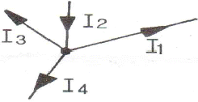
- I1==I2-I3+I4
- I1=I2+I3+I4
- I1=I2-I3-I4
- I1=-I2-I3+I4
(정답률: 66%)
67. 그림과 같은 전체 주파수 전달함수는? (단, A가 무한히 크다.)
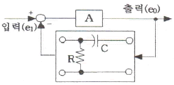
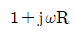
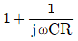
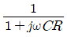
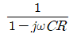
(정답률: 45%)
68. 그림의 전달함수를 계산하면?
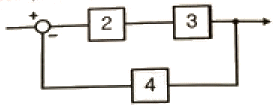
- 0.15
- 0.22
- 0.24
- 0.44
(정답률: 57%)
69. 미분요소에 해당하는 것은?(단, K는 비례상수이다.)
- G(s)=K
- G(s)=Ks
- G(s)=K/s
- G(s)=K/(Ts+1)
(정답률: 61%)
70. 그림과 같은 신호흐름선도에서 X2/X1를 구하면?
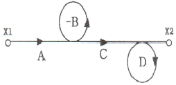
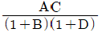
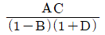
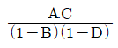
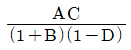
(정답률: 65%)
71. 그림에서 전류계의 측정범위를 10배로 하기 위한 전류계의 내부저항 r(Ω)과 분류기 저항 R(Ω)과의 관계는?
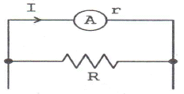
- r=9R
- r=R/9
- r=10R
- r=R/10
(정답률: 50%)
72. 온도보상용으로 사용되는 것은?
- SCR
- 다이액
- 다이오드
- 서미스터
(정답률: 81%)
73. G(s)=1/1+5s일 때 절점주파수 ω(rad/sec)를 구하면?
- 0.1
- 0.2
- 0.25
- 0.4
(정답률: 50%)
74. 목표값이 시간적으로 변하지 않는 일정한 제어는?
- 정치제어
- 추종제어
- 비율제어
- 프로그램제어
(정답률: 72%)
75. 제벡효과(Seebeck effect)를 이용한 센서에 해당하는 것은?
- 저항 변화용
- 용량 변화용
- 전압 변화용
- 인덕턴스 변화용
(정답률: 70%)
76. 폐루프 제어계에서 제어요소가 제어대상에 주는 양은?
- 조작량
- 제어량
- 검출량
- 측정량
(정답률: 61%)
77. 그림과 같은 유접점 회로를 간단히 한 회로는?
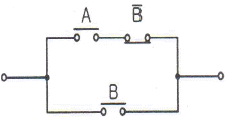
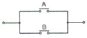
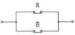
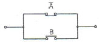
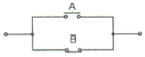
(정답률: 72%)
78. 3상 유도전동기의 출력이 15kW, 선간전압이 220V, 효율이 80%, 역률이 85%일 때, 이 전동기에 유입되는 선전류는 약 몇 A인가?
- 33.4
- 45.6
- 57.9
- 69.4
(정답률: 42%)
79. 단위계단 함수 u(t)의 그래프는?
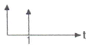
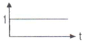
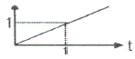
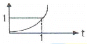
(정답률: 75%)
80. 직류기에서 전기자 반작용에 관한 설명으로 틀린 것은?
- 주자속이 감소한다.
- 전기자 기자력이 증대된다.
- 정기적 중성축이 이동한다.
- 자속의 분포가 한쪽으로 기울어진다.
(정답률: 56%)